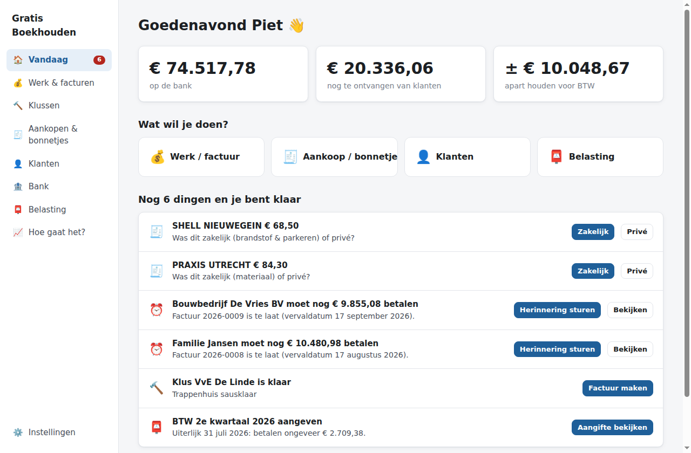
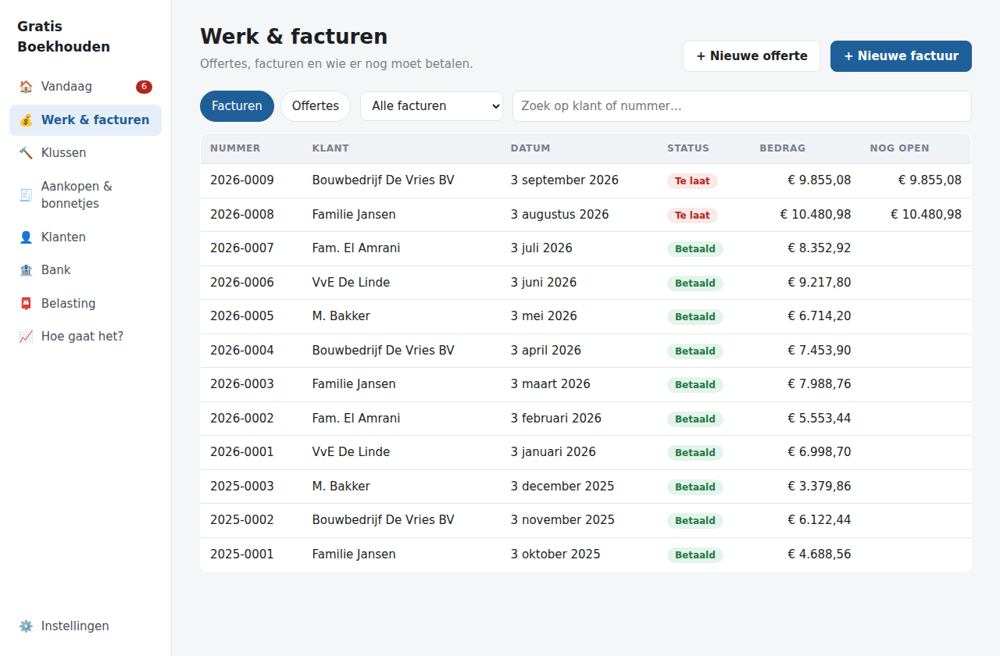
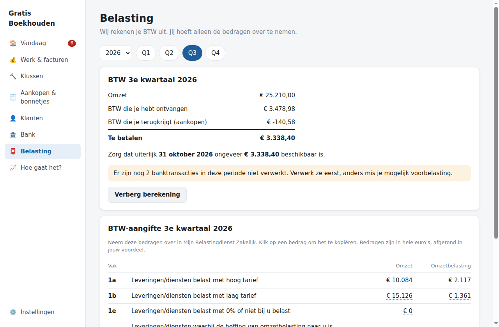
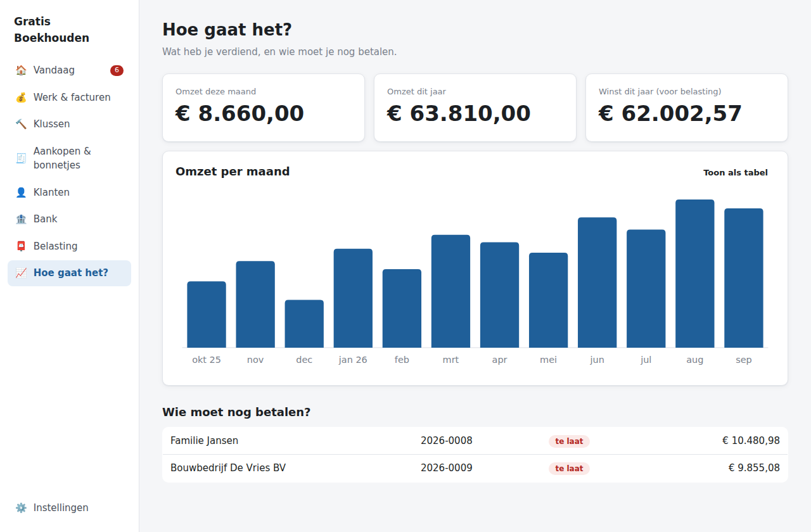

Voor stukadoors, schilders, timmerlieden, loodgieters, elektriciens en andere vakmensen
Jij beheert je bedrijf.
Wij maken de boekhouding.
Offertes, facturen, bonnetjes, bank en BTW, zonder dat je iets van boekhouden hoeft te weten. Het programma vraagt alleen iets als het echt niet zeker is.
Gratis · Werkt offline · Je administratie blijft op je eigen computer

op de bank
nog te ontvangen
apart houden voor BTW
Dit zie je elke ochtend in één oogopslag, zonder tientallen grafieken.
Niet "wat wilt u boeken?", maar "wat is er gebeurd?"
Ik heb werk gedaan
Offerte → klant akkoord → klus → werk klaar → factuur in één klik. Mailen met PDF erbij.
Ik heb een bonnetje
Foto of PDF erin. Wij lezen winkel, datum, bedrag en BTW, en zoeken de betaling op je bank erbij.
Er is betaald
Bankafschrift inlezen: betalingen worden automatisch gekoppeld aan facturen en bonnetjes.
BTW-aangifte
"Te betalen € 3.365, uiterlijk 31 oktober." Plus exact wat je invult bij de Belastingdienst.
Je administratie als inbox die leeg kan
Geen lijsten met mutaties, alleen de paar dingen die jouw aandacht nodig hebben:
- € 1.452 ontvangen van De Vries
Dit lijkt betaling van factuur 2026-038. [Klopt] - Praxis € 84,30
Was dit zakelijk of privé? - Klus Jansen is klaar
[Factuur maken]
Is alles verwerkt? Dan staat er gewoon: Je bent bij ✓
Het programma leert van je antwoorden. De eerste keer Bouwmaat vraagt het nog "materiaal?", daarna verwerkt het zulke aankopen automatisch.


BTW zonder rubrieken-stress
Omzet, BTW die je ontving, BTW die je terugkrijgt, en wat je moet betalen. Klik op Bekijk berekening en je ziet precies wat je bij 1a, 1b en 5b invult in Mijn Belastingdienst Zakelijk. Klik op een bedrag om het te kopiëren.
Onder water: een echte dubbele boekhouding met het RGS-rekeningschema. Je boekhouder kan een auditfile (XAF) of saldibalans exporteren.
Hoe gaat het met je bedrijf?
Omzet per maand, winst dit jaar, en wie je nog moet betalen. Meer heb je meestal niet nodig.

Alles wat een vakman nodig heeft
Offertes & facturen
Doorlopende nummering, BTW per regel (21%, 9%, 0%, verlegd, KOR), creditfacturen en automatische herinneringen.
Eigen opmaak
Logo, kleuren, lettertype en vaste teksten, met live voorbeeld.
Bonnetjes & e-facturen
UBL/XML gaat altijd voor, dan de PDF-tekst, en pas daarna lokale tekstherkenning. Twijfel? Dan zie je waar op de bon we het bedrag lazen.
Alle Nederlandse banken
CSV van ING, Rabobank, ABN AMRO, bunq, Knab en Triodos, plus MT940 en CAMT.053.
Webshop & betalingen
WooCommerce en Shopify worden facturen; Mollie- en Stripe-uitbetalingen kloppen vanzelf met je bank.
Voor je boekhouder
Grootboek (RGS), journaal, balans, W&V, correctieboekingen en de XAF-auditfile, achter een aparte expertmodus.
Je administratie blijft van jou
Alles staat op je eigen computer: geen account, geen cloud, geen abonnement. Tekstherkenning en AI draaien lokaal (als je ze aanzet), en er gaan geen bonnetjes naar externe servers.
Elke dag wordt er automatisch een back-up gemaakt. Wachtwoorden en API-sleutels worden versleuteld opgeslagen.
AI verzint nooit je boekhouding
AI mag voorstellen: "dit lijkt gereedschap". Hoe dat geboekt wordt, bepalen vaste, geteste regels. Zo is elke boeking reproduceerbaar en uitlegbaar, en verandert er niets als er een ander model wordt gebruikt.
Klaar met boekhouden?
Installeren, vijf vragen beantwoorden, eerste factuur maken.
Download Gratis BoekhoudenLaat de BTW-aangifte altijd controleren als je twijfelt. Deze software is in ontwikkeling.